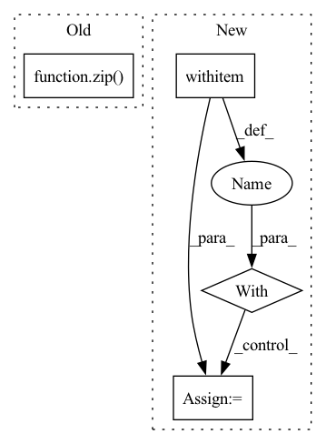

Pattern ID :7851
Before Change
inputs = generate_random_inputs(onnx_filepath, batch_size)
input_names = get_input_names(onnx_filepath)
output_names = get_output_names(onnx_filepath)
inputs_dict = {name: value for name, value in zip( input_names, inputs) }
// ONNXRuntime inference
print("Executing model with ONNXRuntime...")After Change
input_shapes = parse_input_shapes(args.input_shapes)
if input_shapes:
with override_onnx_input_shapes(onnx_filepath, input_shapes) as model_path:
inputs = generate_random_inputs(model_path, args.batch_size)
else:
inputs = generate_random_inputs(onnx_filepath, args.batch_size)
In pattern: SUPERPATTERN
Frequency: 7
Non-data size: 4
Instances Fragment ID: 28044841
Project Name: neuralmagic/deepsparse
Commit Name: 7ab2fe26872ac8846816c982500c13dd1c7b5aa1
Time: 2022-04-06
Author: tyler@neuralmagic.com
File Name: examples/benchmark/check_correctness.py
M Class Name: AnonimousClass
N Class Name: AnonimousClass
M Method Name: main(0)
N Method Name: main(0)
M Parent Class:
N Parent Class:
M File Name: examples/benchmark/check_correctness.py
N File Name: examples/benchmark/check_correctness.py
M Start Line: 88
M End Line: 106
N Start Line: 97
N End Line: 117
Before Change
assert len(out_files) == len(json_files)
for inp_file, out_file in zip( json_files, out_files) :
assert out_file.name == inp_file.stem + ".json"
serialized = out_file.read_text("utf-8")After Change
assert len(out_files) == 1
with out_files[0].open() as f:
data = json.load(f)
uid = data["uid"]
assert out_files[0].name == f"{uid}.json"
serialized = out_files[0].read_text("utf-8") Fragment ID: 28044846
Project Name: bluebrain/search
Commit Name: d6311d2b5721314c73b50113e8fa8b32d1071b84
Time: 2021-10-15
Author: pierre-alexandre.fonta@epfl.ch
File Name: tests/unit/entrypoint/database/test_parse.py
M Class Name: AnonimousClass
N Class Name: AnonimousClass
M Method Name: test_cord19_json(2)
N Method Name: test_cord19_json(2)
M Parent Class:
N Parent Class:
M File Name: tests/unit/entrypoint/database/test_parse.py
N File Name: tests/unit/entrypoint/database/test_parse.py
M Start Line: 25
M End Line: 61
N Start Line: 77
N End Line: 109
Before Change
self.vocab = list(set(concatenate_text.split()))
for index, vocab in list(zip( range(0, len(self.vocab)), self.vocab) ):
self.vocab_dict[vocab] = index
self.index_dd = np.array(list(map(lambda y: np.array(list(map(lambda x:After Change
indices = []
data = []
vocabulary = {}
with open(self.file_name, "r") as filino:
docs = filino.readlines()
for d in docs:
for term in d.split(): Fragment ID: 28044845
Project Name: milanlproc/contextualized-topic-models
Commit Name: 06e8fbee8e3be72841f4aac15b1f43bd6821ffee
Time: 2020-07-30
Author: s.terragni4@campus.unimib.it
File Name: contextualized_topic_models/utils/data_preparation.py
M Class Name: TextHandler
N Class Name: TextHandler
M Method Name: prepare(1)
N Method Name: prepare(1)
M Parent Class:
N Parent Class:
M File Name: contextualized_topic_models/utils/data_preparation.py
N File Name: contextualized_topic_models/utils/data_preparation.py
M Start Line: 48
M End Line: 64
N Start Line: 51
N End Line: 68
Before Change
inputs = generate_random_inputs(onnx_filepath, batch_size)
input_names = get_input_names(onnx_filepath)
output_names = get_output_names(onnx_filepath)
inputs_dict = {name: value for name, value in zip( input_names, inputs) }
// Benchmark ONNXRuntime
print("Benchmarking model with ONNXRuntime...")After Change
input_shapes = parse_input_shapes(args.input_shapes)
if input_shapes:
with override_onnx_input_shapes(onnx_filepath, input_shapes) as model_path:
inputs = generate_random_inputs(model_path, args.batch_size)
else:
inputs = generate_random_inputs(onnx_filepath, args.batch_size)
Fragment ID: 28044844
Project Name: neuralmagic/deepsparse
Commit Name: 00253f881a655c8b7d109bf4ccf9d91bd876f8ef
Time: 2023-01-24
Author: michael@neuralmagic.com
File Name: examples/benchmark/run_benchmark.py
M Class Name: AnonimousClass
N Class Name: AnonimousClass
M Method Name: main(0)
N Method Name: main(0)
M Parent Class:
N Parent Class:
M File Name: examples/benchmark/run_benchmark.py
N File Name: examples/benchmark/run_benchmark.py
M Start Line: 112
M End Line: 141
N Start Line: 125
N End Line: 159
Before Change
pbar = tqdm.tqdm(unit="imgs", total=len(sample_ids))
// download images
for sample_id, filename in zip( sample_ids, filenames) :
read_url = self._samples_api.get_sample_image_read_url_by_id(
self.dataset_id,
sample_id,After Change
// return whether the download was successful
return success
with ThreadPoolExecutor(max_workers=max_workers) as executor:
results = list(executor.map(
lambda_, downloadables, chunksize=1))
if not all(results): Fragment ID: 28044834
Project Name: lightly-ai/lightly
Commit Name: 42a1a66d19d6f9962210e779d4114edef01d1767
Time: 2022-07-27
Author: jeremy@lightly.ai
File Name: lightly/api/api_workflow_download_dataset.py
M Class Name: _DownloadDatasetMixin
N Class Name: _DownloadDatasetMixin
M Method Name: download_dataset(5)
N Method Name: download_dataset(4)
M Parent Class:
N Parent Class:
M File Name: lightly/api/api_workflow_download_dataset.py
N File Name: lightly/api/api_workflow_download_dataset.py
M Start Line: 86
M End Line: 108
N Start Line: 48
N End Line: 153
Before Change
restored from the saved checkpoint.
data = _read_file(path, pool_size=pool_size, buf_size=buf_size)
keys, values = zip(
*list(np.load(io.BytesIO(data), allow_pickle=False).items()))
// NOTE: NumPy loses any bfloat16 dtypes when saving, so we recover them here.
values = jax.tree_util.tree_map(_recover_bfloat16, values)
if tree:
treedef = jax.tree_util.tree_structure(tree)After Change
file = io.BytesIO(_read_file(path, pool_size=pool_size, buf_size=buf_size))
else:
file = gfile.GFile(path, "rb")
with np.load(file, allow_pickle=False) as data:
values = list(data.values())
if not tree:
keys = list(data.keys())
file.close() Fragment ID: 28044833
Project Name: google/uncertainty-baselines
Commit Name: 08b114c5fb473767ca9869e0aaca8625505b8199
Time: 2022-07-18
Author: dusenberrymw@google.com
File Name: baselines/jft/checkpoint_utils.py
M Class Name: AnonimousClass
N Class Name: AnonimousClass
M Method Name: load_checkpoint(5)
N Method Name: load_checkpoint(4)
M Parent Class:
N Parent Class:
M File Name: baselines/jft/checkpoint_utils.py
N File Name: baselines/jft/checkpoint_utils.py
M Start Line: 150
M End Line: 152
N Start Line: 133
N End Line: 163
Before Change
jejus = [jeju for _, jeju in seoul2jeju]
X = InferInputsBuilder(tokenizer, config["max_length"])(srcs=jejus)
tgt_ids = transformer.predict(X)
for pred, ans in zip( tgt_ids.tolist(), seouls) :
print(tokenizer.decode(pred), "|", ans)
After Change
args = parser.parse_args()
config = load_config()
config.update(vars(args))
with wandb.init(entity="eubinecto", project="dekorde") as run:
artifact = run.use_artifact("transformer:latest")
artifact.checkout()
transformer_ckpt, tokenizer_dir = transformer_paths()
transformer = Transformer.load_from_checkpoint(transformer_ckpt) Fragment ID: 28044849
Project Name: eubinecto/dekorde
Commit Name: fd3b05ba0d98e727d7c58233ac0e8c0449890275
Time: 2021-12-06
Author: eubinecto
File Name: main_predict.py
M Class Name: AnonimousClass
N Class Name: AnonimousClass
M Method Name: main(0)
N Method Name: main(0)
M Parent Class:
N Parent Class:
M File Name: main_predict.py
N File Name: main_predict.py
M Start Line: 10
M End Line: 19
N Start Line: 11
N End Line: 27